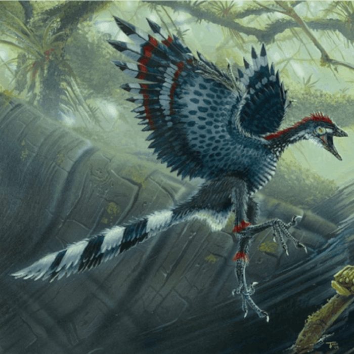
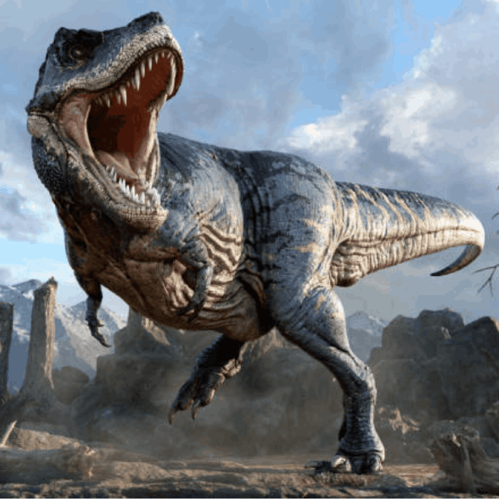
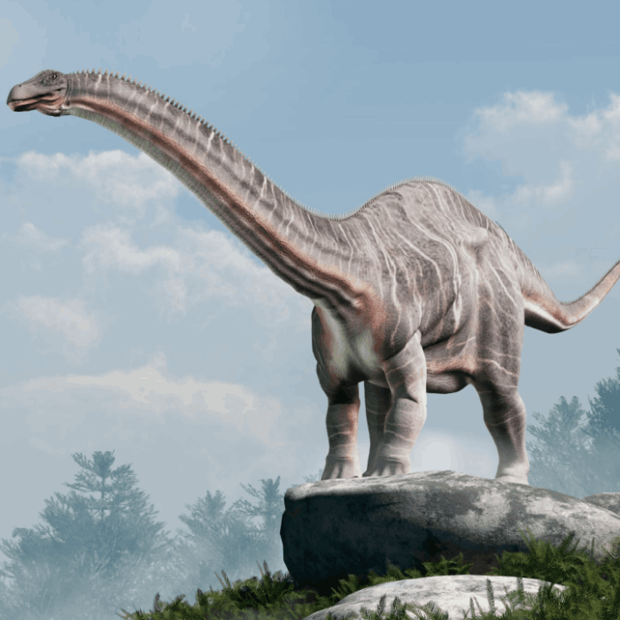

Lizard-hipped dinosaurs
Saurischians
"Saurischia" means "lizard hip." Carnivorous dinosaurs are classified as saurischians, along with two lines of herbivorous sauropodomorphs.

Key Hip Bones
- The ilium is the uppermost hip bone and an important attachment point for leg and tail muscles.
- The pubis is one of the pelvic bones used to compare dinosaur hip structures.
- The ischium extends backward and anchors leg retractor muscles.
- Modern saurischians include birds such as cassowaries, secretary birds, and harriers.
Popular Saurischians


